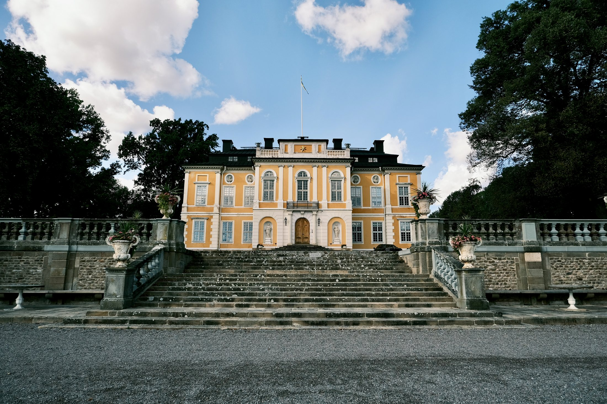
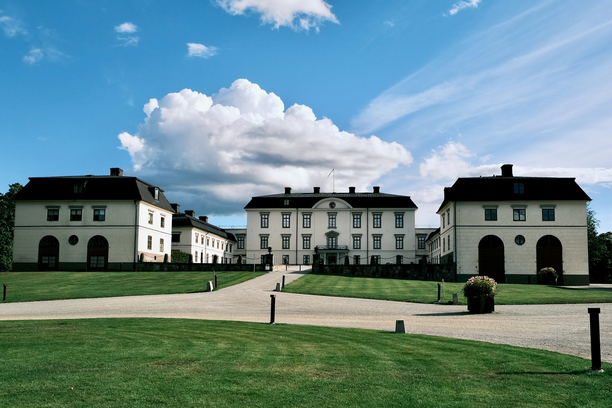

Steninge and Rosersberg stand three and a half kilometres apart on the Sigtuna shore of Mälaren, close enough that the camera puts forty-five minutes between the last frame at one and the first at the other. Sixty years separate them, and so does the difference between a house a courtier built for himself and a house that ended up belonging to a king. Both differences are visible from the drive.

Steninge was begun in 1694 for Carl Gyllenstierna, to a design by Nicodemus Tessin the Younger, who would shortly be handed the rebuilding of the royal palace in Stockholm. What he put here is a single ochre block with white dressings, and everything in front of it is arranged to make you look at that block: a gravel drive, a stone balustrade with urns set along it, and a broad staircase climbing straight to the door. There is no courtyard and no wings, nothing to step into. You stand below it and look up, and that is the whole design.
The garden side
Behind the house the logic reverses. A gravel avenue runs away from the building between two rows of clipped conical trees, past a fountain, and the trees close the view down until the façade is the only thing left at the end of it. The front of Steninge asks you to look up. The garden makes you walk.

The von Fersen family bought the estate in 1736, and it came down to Axel von Fersen the Younger — the count beaten to death by a crowd in central Stockholm in June 1810, during a state funeral, on a rumour that he had poisoned the crown prince. The house at the end of this avenue is the one he inherited. Nothing about it says so.
Three and a half kilometres south
Rosersberg is the older house and the larger story. It was built in the 1630s for the Oxenstiernas, at the height of the family's power, and later passed to the crown. In 1762 it was given to Duke Karl, who became Karl XIII, and it has been one of Sweden's royal palaces ever since. It announces none of that. The main block sits back and low, and two long wings run forward from it on either side to enclose a gravel forecourt. Nothing here climbs.

Step in and the enclosure tightens. A cobbled path runs up the middle between two stone urns, the wings hold both sides, and the clock in the pediment stays straight ahead the whole way. This is a court arrangement — a room made out of doors, with a single door at the end of it. Karl XIV Johan kept the palace in use in the early 1800s, and the plan suits a household that arrives in carriages and needs somewhere for them to turn.

One house you look up at; the other closes around you before you reach the door.
Sixty years and one rank apart, the two buildings do opposite things to whoever walks up. Steninge stages a single object and puts you at the bottom of it, which is what a courtier's house is for. Rosersberg had to hold a court, so it opens, encloses, and channels everyone to the same door. Neither was built with photographs in mind, and both are still working on anyone who turns up with a camera.